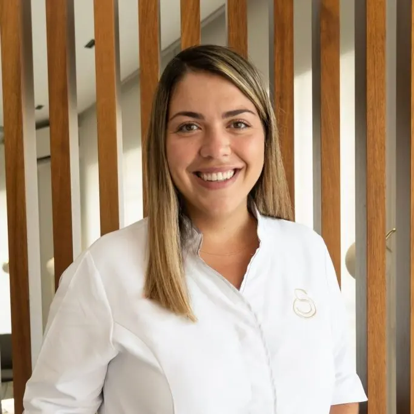

Prostodoncia y Estética Dental
Dra. Solymar R. Cabrera Morales
Licenciada en Odontología · Nº Colegiada: 38000914
Dirige el enfoque clínico de la consulta con atención cercana, planificación estética y rehabilitadora, y una visión integral de la salud bucodental.